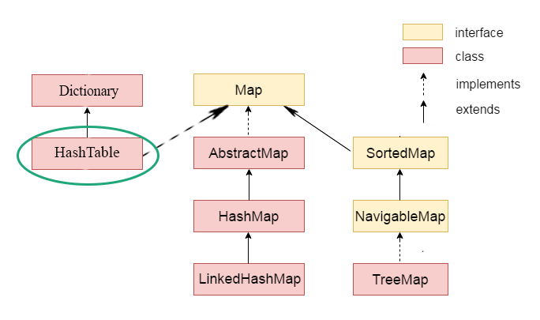
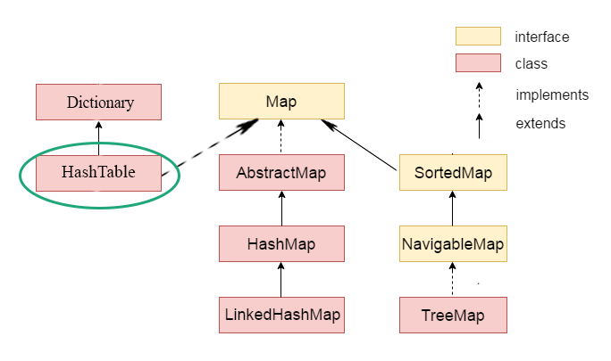
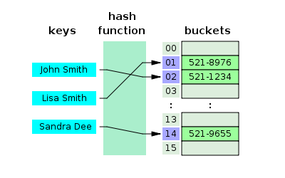

List Interface
Khi nói tới cái này, ta sẽ phải nhớ đến các Class nổi tiếng của nó bao gồm:
- Array List
- Vector
- LinkedList
Cách sử dụng
Giả sử ta có 1 danh sách các objects, ta cần lưu trữ và xử lý chúng, ta cần sử dụng cái này.
List<UserDTO> listUserDTO = new ArrayList<>();
Đặc điểm của cái này, là ta có thể push các object vào thoải mái, nó ko quan tâm tới vấn đề là Object đó đã tồn tại trong Collection hay chưa.
Điểm giống
Như ta nói ở trên kia, nó được dùng để lưu trữ một list các Objects.
Cho phép sự trùng lặp, tức là 1 Objects có thể xuất hiện trong Collection nhiều hơn 1 lần.
Điểm khác
| Array | Array List | Vector List | Linked List | |
|---|---|---|---|---|
| Bản chất. | Kích thước cố định, khởi tạo bao nhiêu thì là bấy nhiêu, ko co giãn được | Kích thước có thể thay đổi, khi full thì tự động mở rộng bằng 150% lần kích thước hiện tại | Kích thước có thể thay đổi, khi full thì tự động mở rộng bằng 200% lần kích thước hiện tại | Kích thước có thể thay đổi, khi full thì tự động mở rộng, đuộc gọi là double linked list. |
| Đối tượng áp dụng | Có thể chứa được cả đối tượng nguyên thủy lẫn objects | Chỉ lưu trữ được đối tượng Object, không lưu được đối tượng nguyên thủy. Khi push một đối tượng nguyên thủy vào, nó được chuyển thành kiểu đối tượng (Xem khái niệm auto-boxing ở các bài trước). | ||
| Tốc độ | Lưu trữ và thao tác (thêm, xóa) nhanh (Vì bị giới hạn từ đầu, đánh dấu theo index.) | Tốc độ lưu trữ và thao tác chậm hơn. | ||
| Các method hỗ trợ. | Chỉ có thuộc tính length | Có nhiều method hơn | ||
| Vấn đề về khởi tạo và gán giá trị. | Luôn luôn phải xác định trước kích thước của mảng. Chỉ có thể sử dụng toán tử gán để gán giá trị cho mảng. | Sử dụng toán tử add để add một phần tử bất kì vào mảng | ||
| Generic | Không thể sử dụng. Luôn luôn phải push cùng 1 kiểu dữ liệu vào đây. | Cho phép sử dụng Generics, có thể push các Objects khác nhau vào đây. Tuy nhiên nó sẽ throw ra error trong một vài trường hợp nếu cái Object đó ko tương thích với các Object khác của Collection. | ||
| Chi tiết về 3 cái đặc biệt kia | ||||
| Bản chất. | Sử dụng mảng động để lưu trữ các phần tử. Nó là một cấu trúc dữ liệu dựa trên chỉ số (index) trong đó mỗi phần tử được liên kết với 1 chỉ mục | Sử dụng danh sách liên kết đôi để lưu trữ các phần tử. Cấu trúc dữ liệu của Linked List bao gồm các node, nhưng bản thân nó chỉ lưu địa chỉ của node đầu tiên và node cuối cùng. | ||
| Địa chỉ vùng nhớ | Địa chỉ vùng nhớ liên tục, khi có 1 sự thay đổi về giá trị, nếu list cần được mở rộng, nó sẽ xin một vùng nhớ khác để sao chép và đánh lại thứ tự. | Địa chỉ các ô nhớ rời rạc và không liên tục, thích ở đâu thì ở, Nó duy trì thứ tự của các phần tử thêm vào. | ||
| Synchronized | Không | Có | Không | |
| Insert và Delete | Việc thêm một object hay xóa nó đi đều dẫn đến trường hợp cần phải resize lại mảng. Điều này khiến cho nó sẽ bị ảnh hưởng rất lớn vì việc copy và giải phóng bộ nhớ. Vì vậy, độ phức tạp của nó là O(n). | Việc thêm phần tử vào Linked List sẽ rất nhanh nếu nó là phần tử đầu tiên hoặc cuối cùng. Theo bản chất của Linked List ở trên kia, nó chỉ lưu thông tin của Head và Tail, nên thêm vào 2 cái này thì độ phức tạp là O(1), trong khi chèn vào các vị trí khác thì độ phức tạp của nó sẽ là O(n). Đối với việc delete thì cũng xảy ra tương tự. | ||
| Get element | Hỗ trợ truy xuất theo chỉ mục, nên lúc nào cần thì nó có thể căn cứ vào chỉ mục mà lấy ra ngay, chả cần phải duyệt. Do đó độ phức tạo của nó là O(1). Đối với cái thằng này, ta cần ghi nhớ, nó luôn hỗ trợ access random. | Do bản chất của nó là chỉ lưu trữ head và tail, nên khi cần tìm 1 phần tử trong Linked List, nó đều phải duyệt từ đầu đến cuối. Do đó, việc truy xuất vào các phần tử rất chậm, độ phức tạp là O(n). | ||
| Cách sử dụng | Dùng với đối tượng nguyên thủy, khi đã biết trước kích thước | Dùng với các đối tượng, nhưng ko cần biết đến kích thước của mảng, và trong môi trường single-thread. Dùng nó trong trường hợp cần truy cập đến các đối tượng trong mảng. | Dùng với các đối tượng, không cần biết kích thước của mảng, và có thể xài trong môi trường multiple-thread. Dùng nó trong trường hợp cần truy cập đến các đối tượng trong mảng. | Dùng với các đối tượng, không cần biết đến kích thước của mảng, không quan tâm tới việc lấy phần tử theo index, mà chỉ quan tâm tới việc thêm vào danh sách và duyệt các phần tử trong danh sách theo thứ tự mặc định. |
** (Linked List thì có 2 loại, single và double. Trong Java khi nói đến Linked List tức là nói đến kiểu dữ liệu Double Linked nhé - double linked chứa thông tin của cả cái node ở trước và sau nó, khác với single linked - chỉ lưu thông tin thằng tiếp theo)
(Truy cập ngẫu nhiên tức là truy cập vào một vị trí bất kì. Vì Array List nó lưu theo chỉ mục , nên cần lấy theo giá trị index nào thì nó cứ tìm tới index đó, lấy ra là xong. Trong khi cái Linked list thì phải duyệt qua từng cái 1).
Tóm lại
Khi cần thực hiện nhiều thao tác thêm hoặc xóa element vào List, ta ưu tiên dùng LinkedList.
Khi cần thực hiện nhiều đối với thao tác get element trên List, ta ưu tiên dùng ArrayList
Set Interface
Khi nói tới cái này, ta sẽ phải nhớ đến các Class nổi tiếng của nó bao gồm:
- Hash Set
- Linked Hash Set
- Tree Set
Đặc điểm
Set là một cấu trúc dữ liệu dùng để lưu trữ các phần tử không trùng lặp.
Cách sử dụng
| Hash Set | Linked Hash Set | Tree Set | |
|---|---|---|---|
| Bản chất. | được implements bằng cách sử dụng 1 Hash table để lưu trũ. Một Hash table lưu trữ thông tin bởi sử dụng 1 kĩ thuật được gọi là hashing. Trong hashing, nội dung của một key đc sử dụng để quyết định 1 value duy nhất, gọi là hash code. Hash code sau đó được sử dụng như 1 index, tại đó dữ liệu mà liên kết với key được lưu trữ. Phép biến đổi từ key này sang hash code được thực hiện tự động. | được implements như một hash table, nhưng nó có sự khác biệt với cái trên kia ở chỗ : Mỗi phần tử trong mảng băm này sẽ trỏ đến phần tử đầu tiên trong một Linked list. Linked list này lưu trữ thông tin của các Entry theo thứ tự mà nó được insert vào set. Nên nói một cách khác, set này khác với Hash set ở chỗ, nó là một Set có thứ tự. Hash code sau đó được sử dụng như một index, tại đó dữ liệu được liên kết với key đã được lưu trữ. Phép biến đổi của key này vào trong hash code đc thực hiện tự động. | Nó sử dụng tree để lưu trữ các đối tượng. Các đối tượng này bắt buộc phải implement method compareTo để có thể sắp xếp |
| Thứ tự duyệt | Không theo thứ tự, đúng ra thì khi mà convert từ object để lấy hash code được sử dụng như key, key này là index, và nó sort theo index. Tuy nhiên vì cơ chế này hoạt động tự động nên ta ko hiểu giá trị index của nó được tính ntn. | Thứ tự khi dùng iterator duyệt là thứ tự insert của các Objects vào set. Thông tin này được nó lưu trữ trong Linked list. | Nó sử dụng tree để lưu trữ, các Object được sắp xếp theo thứ tự tăng dần của nó. |
| Thêm / remove | Độ phức tạp là O(1). | Độ phức tạp là O(1) | Độ phức tạp là O(log(n)) - vì cần sắp xếp lại dãy nếu có bất cứ sự thay đổi nào (Add-remove-contain) |
| Objects | không trùng lặp và cho phép null | không trùng lặp và cho phép null | không trùng lặp và không được null. Ngoài ra nó còn phải override method compareTo để có thể sắp xếp. |
| Synchronized | Không | Không | Không |
| Truy cập | Truy cập chậm | Try cập nhanh. | |
| Cách sử dụng | Sử dụng để lưu trữ các thông tin mà ko có sự trùng lặp | Sử dụng để lưu trữ các thông tin mà ko có sự trùng lặp và duyệt theo giá trị mà nó được chèn vào | Sử dụng để lưu trữ các thông tin mà ko có sự trùng lặp và duyệt theo thứ tự tăng dần. Vì tính chất sắp xếp của nó nên nó thường được lựa chọn khi lưu giữ một lượng thông tin lớn đã xếp thứ tự và phải được tìm kiếm nhanh chóng. |
Map Interface
Khi nói tới cái này, ta sẽ phải nhớ đến các Interface nổi tiếng của nó bao gồm:
- Hash Map
- Linked Hash Map
- Hash Table
- Tree Map
 

Cách sử dụng
Trong Java, map được sử dụng để lưu trữ và truy xuất dữ liệu theo cặp dưới dạng key - value.
Mỗi key - value được gọi là các entry.
Map trong java chỉ chứa một giá trị key duy nhất.
Map thường được sử dụng nếu ta cần tìm kiếm, update, delete elements dựa trên key.
Điểm giống
lưu trữ dữ liệu dưới dạng cặp key và value.
Chứa các key duy nhất
Điểm khác biệt
| Hash Map | Linked Hash Map | Tree Map | Hash Table | |
|---|---|---|---|---|
| Bản chất | Lưu trữ dữ liệu dưới dạng key-value | Sử dụng tree để lưu trữ các key. | Hash table là một array của các list. Mỗi list được xem như là 1 bucket (vùng chứa các phần tử). Vị trị của bucket được xác định bằng việc gọi phương thức hash code. Cụ thể hơn thì xem lại bài trước  | |
| Object | Có thể có 1 key null và nhiều value null. | Có thể có 1 key null và nhiều value null. | Không cho phép bất cứ key nào là null, nhưng cho phép nhiều value null | Không cho phép bất cứ key nào là null hoặc value null |
| Thứ tự | Không | Duy trì các phần tử theo thứ tự chèn | Lưu trữ theo thứ tự tăng dần của key | Không |
| Đồng bộ | Không | Có. | ||
| Cách duyệt | Iterator | Iterator và Enumeration | ||
| Fail-fast | Có | Không | ||
| HIệu năng | Nhanh và ít tốn bộ nhớ. Độ phức tạp O(1). | Chậm và tốn bộ nhớ. Bản chất của hash table đó là cứ với mỗi key, nó sẽ cần 1 hash function để tìm ra 1 giá trị index chỉ tới bucket chứa objects đó. Vì vậy, thay vì việc nó sẽ lấy giá trị đó trực tiếp trong map, giờ đây nó phải sử dụng hash function để băm cái key đó ra và tìm tới giá trị tương ứng. Do đó nó sẽ tốn thời gian hơn. Tuy nhiên, độ phức tạp của nó vẫn là O(1) | ||
| Sử dụng | Trong môi trường non-thread. | Trong môi trường multiple-thread. | ||